TrendFactory¶
(Source code, png, hires.png, pdf)
{kind=link}
{kind=link}
- class TrendFactory(*args)¶
Trend estimator.
Refer to Trend computation.
- Available constructors:
TrendFactory(basisSequenceFactory=LARS(), fittingAlgorithm=CorrectedLeaveOneOut())
- Parameters
- basisSequenceFactory
BasisSequenceFactory The regression strategy that provides the estimation of the coefficients associated to the best model among the basis functions.
Default is the least angle regression (LARS) method for the choice of sparse models:
LARS.- fittingAlgorithm
FittingAlgorithm The fitting algorithm that estimates the empirical error on each sub-basis.
Default is the leave one out strategy:
CorrectedLeaveOneOut.
- basisSequenceFactory
Notes
A multivariate stochastic process
 of dimension d where
of dimension d where  can write as the sum of a trend function
can write as the sum of a trend function  and a stationary multivariate stochastic process 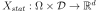 of dimension d as follows:
and a stationary multivariate stochastic process 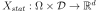 of dimension d as follows: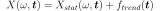
The
TrendFactoryenables to identify the trend function 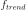 from a given field of the process X and then to remove this last one from the initial field. The resulting field is a realization of the process .
.We consider the functional basis 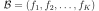 with 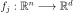. The trend function writes:
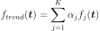
The coefficients 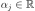 have to be computed. In the case where the number of available data is of the same order as K, the least square system is ill-posed and a more complex algorithm should be used. Some algorithms combine cross validation techniques and advanced regression strategies, in order to provide the estimation of the coefficients associated to the best model among the basis functions (sparse model). For example, we can use the least angle regression (LARS) method for the choice of sparse models. Then, some fitting algorithms like the leave one out, coupled to the regression strategy, assess the error on the prediction and enable the selection of the best sparse model.
Methods
build(field, basis)Estimate the trend of a process.
Accessor to functional basis.
Accessor to the object's name.
Accessor to fitting algorithm basis.
getId()Accessor to the object's id.
getName()Accessor to the object's name.
Accessor to the object's shadowed id.
Accessor to the object's visibility state.
hasName()Test if the object is named.
Test if the object has a distinguishable name.
setBasisSequenceFactory(basisSequenceFactory)Accessor to functional basis.
setFittingAlgorithm(fittingAlgorithm)Accessor to fitting algorithm basis.
setName(name)Accessor to the object's name.
setShadowedId(id)Accessor to the object's shadowed id.
setVisibility(visible)Accessor to the object's visibility state.
- __init__(*args)¶
- build(field, basis)¶
Estimate the trend of a process.
- Available usages:
build(field, basis)
- Parameters
- Returns
- myTrendTransform
TrendTransform The estimated trend function.
- myTrendTransform
Examples
Define a scalar temporal Gaussian process on a mesh of dimension 1:
>>> import openturns as ot >>> myGrid = ot.RegularGrid(0.0, 1.0, 100) >>> amplitude=[5.0] >>> scale=[0.2] >>> myCovModel=ot.ExponentialModel(scale, amplitude) >>> myXProcess=ot.GaussianProcess(myCovModel, myGrid)
Create a trend function: 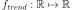 where 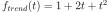:
>>> fTrend = ot.SymbolicFunction(['t'], ['1+2*t+t^2']) >>> fTemp = ot.TrendTransform(fTrend, myGrid)
Add the trend to the initial process and get a field:
>>> myYProcess = ot.CompositeProcess(fTemp, myXProcess) >>> myYField = myYProcess.getRealization()
Estimate the trend function from the field:
>>> myBasisSequenceFactory = ot.LARS() >>> myFittingAlgorithm = ot.KFold() >>> func1 = ot.SymbolicFunction(['t'], ['1']) >>> func2 = ot.SymbolicFunction(['t'], ['t']) >>> func3 = ot.SymbolicFunction(['t'], ['t^2']) >>> myBasis = ot.Basis([func1, func2, func3])
>>> myTrendFactory = ot.TrendFactory(myBasisSequenceFactory, myFittingAlgorithm) >>> myTrendTransform = myTrendFactory.build(myYField, myBasis)
>>> graph = myTrendTransform.getTrendFunction().draw(0.0, 10) >>> graph.add(fTrend.draw(0.0, 10)) >>> graph.add(ot.Cloud(myYField.getMesh().getVertices(), myYField.getValues())) >>> graph.setColors(['red', 'blue', 'black']) >>> graph.setLegends(['estimated trend', 'actual trend', 'sample']) >>> graph.setLegendPosition('topleft') >>> graph.setTitle('Trend estimation from a field') >>> graph.setYTitle('values')
- getBasisSequenceFactory()¶
Accessor to functional basis.
- Returns
- myBasisSequenceFactory
BasisSequenceFactory The functional basis 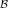.
- myBasisSequenceFactory
- getClassName()¶
Accessor to the object’s name.
- Returns
- class_namestr
The object class name (object.__class__.__name__).
- getFittingAlgorithm()¶
Accessor to fitting algorithm basis.
- Returns
- myFittingAlgorithm
FittingAlgorithm The fitting algorithm that estimates the empirical error on each sub-basis.
- myFittingAlgorithm
- getId()¶
Accessor to the object’s id.
- Returns
- idint
Internal unique identifier.
- getName()¶
Accessor to the object’s name.
- Returns
- namestr
The name of the object.
- getShadowedId()¶
Accessor to the object’s shadowed id.
- Returns
- idint
Internal unique identifier.
- getVisibility()¶
Accessor to the object’s visibility state.
- Returns
- visiblebool
Visibility flag.
- hasName()¶
Test if the object is named.
- Returns
- hasNamebool
True if the name is not empty.
- hasVisibleName()¶
Test if the object has a distinguishable name.
- Returns
- hasVisibleNamebool
True if the name is not empty and not the default one.
- setBasisSequenceFactory(basisSequenceFactory)¶
Accessor to functional basis.
- Parameters
- myBasisSequenceFactory
BasisSequenceFactory The functional basis .
- myBasisSequenceFactory
- setFittingAlgorithm(fittingAlgorithm)¶
Accessor to fitting algorithm basis.
- Parameters
- myFittingAlgorithm
FittingAlgorithm The fitting algorithm that estimates the empirical error on each sub-basis.
- myFittingAlgorithm
- setName(name)¶
Accessor to the object’s name.
- Parameters
- namestr
The name of the object.
- setShadowedId(id)¶
Accessor to the object’s shadowed id.
- Parameters
- idint
Internal unique identifier.
- setVisibility(visible)¶
Accessor to the object’s visibility state.
- Parameters
- visiblebool
Visibility flag.